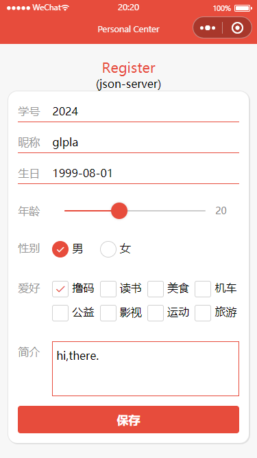

注册/留言/问卷
@register
- 目的
-
掌握数据绑定的使用熟悉常见表单元素的事件了解表单提交和网络请求的基本过程
- 内容
-
数据绑定表单事件的使用json-server服务器的搭建网络请求
- 要求
-
自行设计场景，完成留言、用户注册或问卷调查，并应用到小程序项目中三个应用案例完成一个即可，建议全部完成实验报告：采用学院统一下发的格式文件，以图片或代码形式展示并说明实施过程、各部分功能、具体内容和实现细节，并按照要求命名，最后导出为PDF，提交个人学习通作业未按要求在规定时间内提交视为无效，不得分
- 留言模块
- .婚礼邀请函案例
-
服务器支持 json-server数据文件 msg.json - info开发者信息；msg用户提交数据
{ "info": {}, "msg": [] }表单各字段名字name：用户姓名uname、用户性别ugender、用户电话ucell、用户邮箱umail、用户留言umsg效果图
- 用户注册模块
-
服务器支持 json-server数据文件 user.json - info开发者信息；user用户提交数据
{ "info": {}, "user": [] }使用组件.input - text/nickname
.slider
.picker
.radio radio-group
.checkbox checkbox-group
.textarea
.buttton - submit
用户节点信息字段user:{ id:20221001 ubirth:'2020-08-01', udesc:'hi,there.', ulike:[], uage:18, ugender:'女', uname:'glpla', }提交代码 - 默认提交json，所以不需要额外指定headersubmit(e){ wx.request({ url: 'http://127.0.0.1:3000/user', method:'POST', data:this.data.user, success:(res)=>{ console.log(res); }, fail:err=>{ console.log(err); } }) }效果图 - 问卷调查模块
-
服务器支持 json-server数据文件 survey.json - info开发者信息；survey用户提交数据
{ "info": {}, "survey": [] }问卷内容以小组为单位自定表单各字段名字name：用户姓名uname、用户邮箱umail、用户选择urx（x:1-n）、用户留言umsg表单提交事件处理函数 - 具体服务器地址视当时开发环境submitSurvey(e) { wx.request({ url: 'http://127.0.0.1:3000/survey', method:'POST', data: e.detail.value, success:res=>{ console.log(res); }, fail:err=>{ console.log(err); }, complete:()=>{ console.log('log done'); } }) }效果图
- 扩展
-
使用node.js服务器，提交数据单独保存为一个文件
const express = require('express') const fs = require('fs'); // 创建Web服务器 const app = express(); const port = 3000; // 静态资源；系统中间件-靠前引用；路由中间件 app .use(express.static('./public')) .use(express.json()) app.post('/userInfo', (req, res) => { console.log(req.body); fs.writeFile('./public/data/userInfo.json', JSON.stringify(req.body), (error) => { if (error) { console.log('保存文件失败了') } }); res.json(req.body) }) app.listen(port, () => { console.log('server is on at: http://127.0.0.1:3000'); });如何改善用户体验？如加入各种提示信息. wx.showLoading()
. wx.hideLoading()
. wx.showToast()